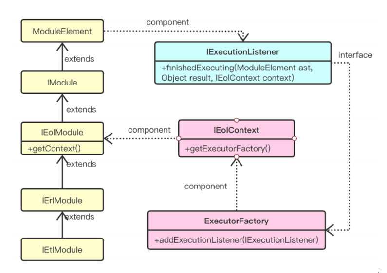

Epsilon Transformation file execution code tracking
source codeLanguage related: Java Tool usage: Eclipse Epsilon: is a collection of modeling languages and tools for modeling engineering The subject is mainly related to ETL (Epsilon Transformation) and EOL (Epsilon Object) languages. ETL inherits EOL and is mainly used for transformation between models
First follow this guide https://www.eclipse.org/epsilon/doc/articles/running-from-source/ Clone Epsilon's source code library and right-click all packages in the plugins, features and tests three folders to complete the import project.
The location of the main files involved in the source code: Package name org.eclipse.epsilon.common.parse AST.java Package name org.eclipse.epsilon.eol.execute.control IExecutionListener.java Package name org.eclipse.epsilon.common.module ModuleElement.java
The realization flow chart of the specific idea code (the ultimate goal is to obtain the code line that runs after the execution of the ETL file) In order to obtain the Executed lines (executed code), it is necessary to record the running of the ETL file. Before the ETL runs, it will be compiled into an AST (abstract syntax tree). Each node of this AST is the module elements of the ETL, so that you can view it The activation status of AST is used to determine the line of code running. The method for how to establish the relationship between ETL and AST nodes (module elements) is shown in the figure below.
ETL inherits EOL, so it also inherits the ExecutionListener interface in the EolModule module. The function of this interface can be instantiated as needed. There are three methods in this interface. The main methods used in this subject are finishedExecuting(ModuleElment ast, Objct result, IEolContext context) This method will run every time the AST node is called. The first attribute of the method is ModuleElement ast, which represents the last node executed, so by marking this node we can know which ETL statements have been executed. And there is a method in ModuleElement called: getRegine() The return value of this method is the row and column data For example, "1:1-20:30" means that this ModuleElement runs from the first line and the first column of the code to the 20th line and 30th column. Therefore, by using the above two methods, you can instantiate the finishedExecuting() method in the ExecutionListener interface interface, and record the row and column data returned after each AST node is run in the instantiated method.
